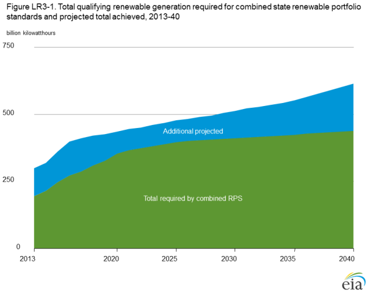

State renewable energy requirements and goals: update through 2013
Release Date: 4/30/14
To the extent possible, AEO2014 reflects state laws and regulations in effect at the end of October 2013 that require the addition of renewable generation or capacity by utilities doing business in the state [17] to meet RPS requirements. The projection does not include laws and regulations with either voluntary goals or targets that can be substantially satisfied with nonrenewable resources. In addition, the projection does not account for fuel-specific provisions—such as those for solar and offshore wind energy—as distinct targets. Where applicable, such distinct targets (sometimes referred to as "tiers," "set-asides," or "carveouts") may be subsumed into the broader targets, or they may not be included in the model because they could be met with existing capacity and/or projected growth based on modeled economic and policy factors.
States are projected to meet their ultimate RPS targets in the AEO2014 Reference case. The RPS compliance constraints in most regions are approximated, however, because National Energy Modeling System is not a state-level model, and each state generally represents only a portion of one of the NEMS electricity regions. In general, EIA has confirmed the states' requirements through original legislative or regulatory documentation, although the Database of State Incentives for Renewables & Efficiency was also used to support those efforts [18]. The aggregate RPS requirement for various mandatory state programs, as modeled for AEO2014, is shown in Figure LR3-1. In 2025, the targets account for slightly less than 10% of U.S. electricity sales.

figure data
At present, most states are meeting or exceeding their required levels of renewable generation, based on qualified generation or purchase of renewable energy credits [19]. A number of factors have helped to create an environment favorable for RPS compliance, including:
- A surge of new RPS-qualified generation capacity timed to take advantage of federal incentives.
- Significant reductions in the cost of wind, solar, and other renewable technologies.
- Generally slower growth of electricity sales.
- Complementary state and local policies that either reduce the cost (for example, equipment rebates) or increase the revenue streams (for example, net metering) associated with RPS-eligible technologies.
EIA projects that, overall, RPS-qualified generation will continue to meet or exceed aggregate mandatory targets for state RPS programs through 2040, as shown in Figure LR3-1.
The aggregate near-term surplus of qualified generation is supported by projected near-term renewable capacity additions but declines slightly as growth in renewable capacity slows toward the end of this decade and RPS targets catch up with supply. The surplus widens again in the final two decades of the projection period, as renewable generation technologies become increasingly competitive with conventional generation sources and state targets generally do not increase beyond 2025.
It is important to note, however, that the aggregate targets and qualifying generation shown in Figure LR3-1 may mask significant regional variation, as well as technology- or tier-specific shortfalls. While some regions may produce excess qualifying generation, others may produce just enough to meet the requirement or may need to import generation from adjoining regions to meet state targets. Furthermore, even though there is more qualifying generation in aggregate than is needed to meet the targets, states with technology-specific goals could still have deficits for certain technologies. Also, this projected pattern of aggregate surplus does not necessarily imply that projected generation would be the same without state RPS policies. State RPS policies may encourage investment in places where it otherwise would not occur or would not occur in the amounts projected, even as other parts of the country see substantial growth above state targets or in their absence. It does, however, suggest that state RPS programs will not be the sole reason for future growth in renewable generation, and that the importance of RPS targets in contributing to growth in renewable generation will decline over time.
Currently, 29 states and the District of Columbia have enforceable RPS or similar laws (Table LR3-1) [20]. Under such standards, each state determines its own levels of renewable generation, eligible technologies [21], and noncompliance penalties. No new RPS programs have been enacted since 2009. There have been a number of modifications to existing programs in recent years, however, building on state implementation experience and changing market conditions.
The year 2013 saw a large number of proposed legislative modifications to existing RPS programs [22], including some attempts to weaken the targets of existing programs significantly. However, only a small subset was enacted, and no states passed major rollbacks or repeals of RPS programs. The changes that were enacted affect some aspects of the laws and implementing regulations, but in general they do not have substantive effects on the representation of state RPS programs in the AEO2014 Reference case. Key changes include:
Colorado
Senate Bill 13-252 [23], signed into law in June 2013, doubles the renewable energy target for large electric cooperatives and cooperative associations to 20% of total electric sales by 2020. The law also adds a renewable distributed generation requirement for electric cooperatives, removes preferential credit multipliers for in-state eligible sources, and expands the set of qualifying energy sources to include coal-mine methane and pyrolysis gas from municipal solid waste.
Connecticut
Senate Bill 1138 [24], enacted in June 2013, relaxes restrictions on how hydroelectric generation can be applied to Connecticut's RPS. The statute expands the set of qualifying Class I resources to include run-of-river hydropower up to 30 MW—an increase over the previous cap of 5 MW—as well as additional sources, such as geothermal electric and some types of biogas. In addition, large-scale hydropower (greater than 30 MW) could, under specified circumstances, be allowed to meet an increasing portion of the RPS, starting at 1% of sales in 2016 and rising to 5% of sales by 2020.
Maryland
The Maryland Offshore Wind Energy Act of 2013, House Bill 226 [25], was enacted in April 2013. The legislation adds to Maryland's existing RPS an offshore wind technology-specific requirement of up to 2.5% of total sales starting in 2017. Qualifying offshore facilities must be located in specific areas of the Outer Continental Shelf and are subject to a defined process for approval by the Maryland Public Service Commission. Projects will be subject to several cost containment triggers: the impact on residential customers cannot exceed $1.50 per month, and renewable energy credits for offshore wind should not exceed $190 per MWh.
Minnesota
In May 2013 Minnesota enacted House Floor 729 [26], which mandates that investor-owned utilities meet a solar technology specific standard of 1.5% of sales by 2020. This minimum is in addition to Minnesota's previously existing target, effectively raising the total percentage of required renewable generation for investor-owned utilities by 1.5%. Of the new solar mandate, 10% must be achieved via small systems that are 20 kilowatts or less. The bill also directs investor-owned utilities to design a "value of solar" tariff that could be used in lieu of a traditional retail rate-compensated net metering agreement.
Montana
Montana enacted several bills during 2013 related to the state’s RPS [27]. Major changes include expanding the set of RPS qualifying technologies to include generation from additional sources, such as: incremental capacity additions at existing hydropower projects; storage technologies such as flywheels, batteries, and hydroelectric pumped storage; and certain types of chemically treated biomass burned at small plants. Small utilities serving 50 or fewer customers are now exempt from the obligation to meet the state's RPS.
Nevada
In June 2013 Nevada enacted Senate Bill 252 [28], which places new limits on the extent to which energy efficiency measures count toward the state's existing standard. The bill also restricts multiplier credits for customer-sited solar generation to installations placed in service before the end of 2015. The obligated utility, Nevada Energy, is also now required by Senate Bill 123 [29] to meet a capacity standard of 350 MW of new renewable capacity by the end of 2021. However, the same capacity can also be applied to the existing sales-based standard and thus does not necessarily require additional capacity beyond that which may have been required to meet the existing standard.
Washington
Washington enacted two bills—Senate Bills 5400 [30] and 5297 [31]—that increase compliance flexibility options for certain providers. Under Senate Bill 5400, utilities that serve customers in multiple states are now allowed to meet their obligations with sources from those states. Senate Bill 5297 allows for the use of "coal transition power" for compliance under very specific circumstances for utilities not experiencing load growth.
Endnotes
- Does not include the RPS policy for Hawaii, because NEMS provides electricity market projections only for the contiguous lower 48 states.
- More information about the Database of State Incentives for Renewables & Efficiency (DSIRE) can be found at http://www.dsireusa.org
- G. Barbose, "Renewable Portfolio Standards in the United States: A Status Update" (November 2013), http://emp.lbl.gov/sites/all/files/rps_summit_nov_2013.pdf.
- Enumerations of state RPS policies may vary from source to source, as these policies vary significantly from state to state with no universal definition. Previous enumerations of 30 state RPS policies by EIA have included a policy in West Virginia that allows for several types of fossil generators to be built instead of renewable generators to meet the portfolio requirement. However, because EIA does not model this in the Annual Energy Outlook as an RPS, it is not included in the current enumeration.
- Eligible technologies, and even the definitions of technologies or fuel categories, vary by state. For example, one state's definition of renewables may include hydropower while another's may not. Table LR-1 provides more detail on how the technology or fuel category is defined by each state.
- Colorado State University, "State Renewable Portfolio Standards Hold Steady or Expand in 2013 Session," Center for the New Energy Economy (Fort Collins, CO: July 2013), http://www.aeltracker.org/graphics/uploads/2013-State-By-State-RPSAnalysis.pdf.
- State of Colorado General Assembly, "Senate Bill 13-252" (June 5, 2013), http://www.leg.state.co.us/clics/clics2013a/csl. nsf/fsbillcont3/D1B329AEB8681D4D87257B3900716761?open&file=252_enr.pdf.
- United States Court of Appeals for the District of Columbia Circuit, EME Homer City Generation, L.P., v. Environmental Protection Agency, et al., No. 11-1302 (decided August 21, 2012), http://www.cadc.uscourts.gov/internet/opinions.nsf/19346B280C78405C85257A61004DC0E5/$file/11-1302-1390314.pdf.
- State of Connecticut General Assembly, "Senate Bill 1138" (June 5, 2013), http://www.cga.ct.gov/2013/ACT/PA/2013PA-00303-R00SB-01138-PA.htm.
- State of Maryland General Assembly, "House Bill 226: Maryland Offshore Wind Energy Act of 2013" (April 2013), http://mgaleg.maryland.gov/2013RS/bills/hb/hb0226e.pdf.
- State of Minnesota Legislature, "House Floor 729" (May 2013), https://www.revisor.mn.gov/laws/?id=85&year=2013&type=0.
- State of Montana Legislature, "Summary of Energy and Telecommunications Legislation: 2013 Legislative Session" (2013), http://leg.mt.gov/content/Committees/Interim/2013-2014/Energy-and-Telecommunications/Committee-Topics/2013EnergyBills.pdf.
- State of Nevada Legislature, "Senate Bill 252" (June 2013), http://www.leg.state.nv.us/Session/77th2013/Bills/SB/SB252_EN.pdf.
- State of Nevada Legislature, "Senate Bill 123" (June 2013), http://www.leg.state.nv.us/Session/77th2013/Bills/SB/SB123_EN.pdf.
- State of Washington Legislature, "Senate Bill 5400" (April 2013), http://apps.leg.wa.gov/documents/billdocs/2013-14/Pdf/Bills/Session%20Laws/Senate/5400-S.SL.pdf.
- State of Washington Legislature, "Senate Bill 5297" ( April 2013), http://apps.leg.wa.gov/documents/billdocs/2013-14/Pdf/Bills/Session%20Laws/Senate/5297.SL.pdf.
Comments
Read what others are saying …
Be the first to comment!